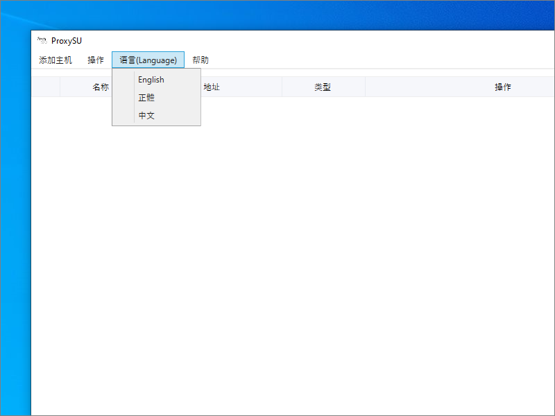
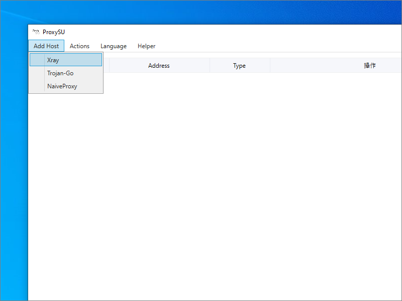
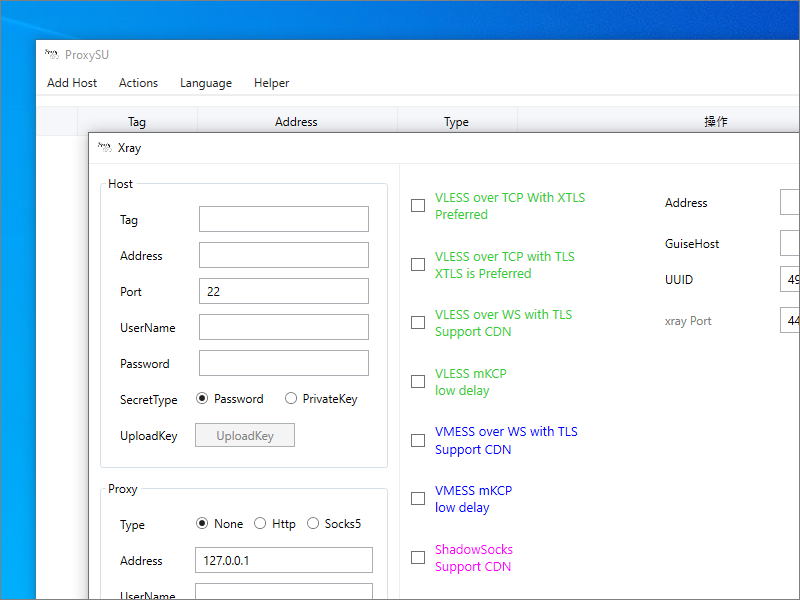
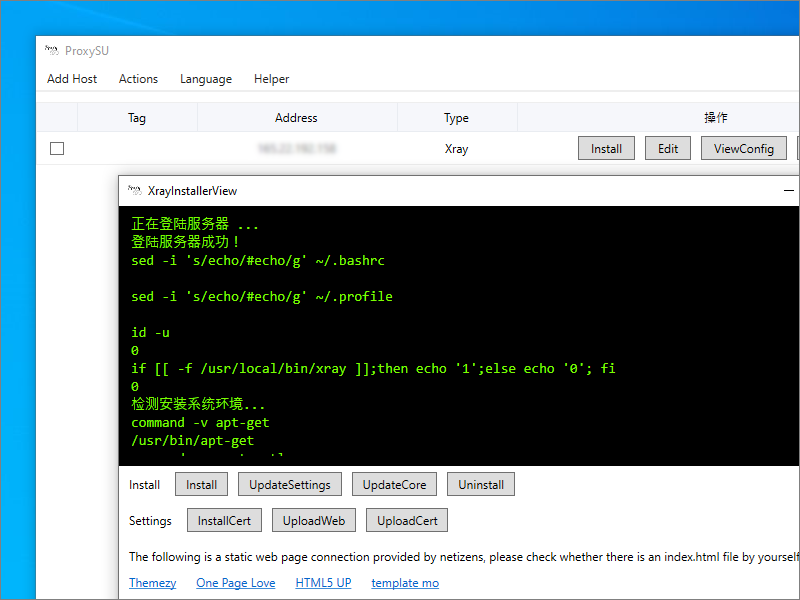
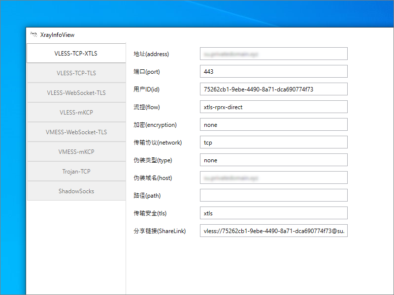
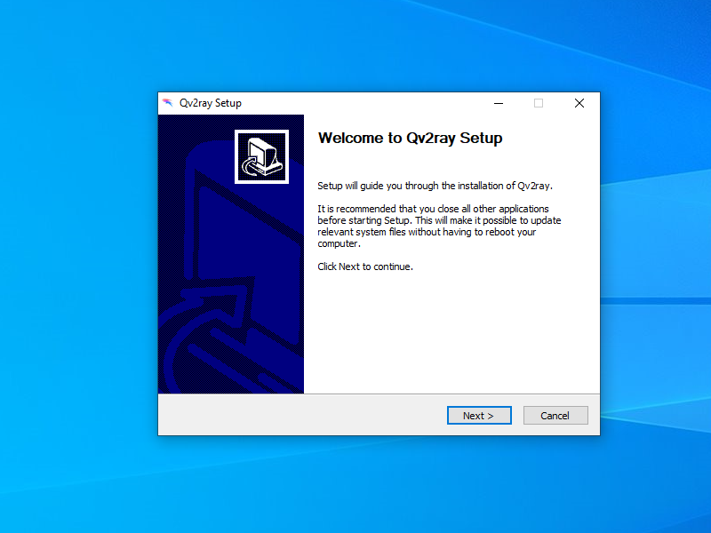
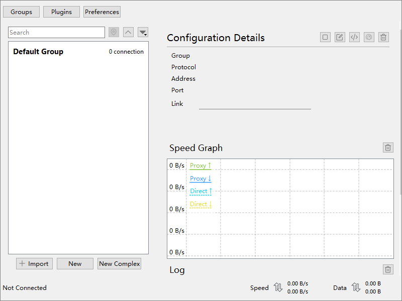
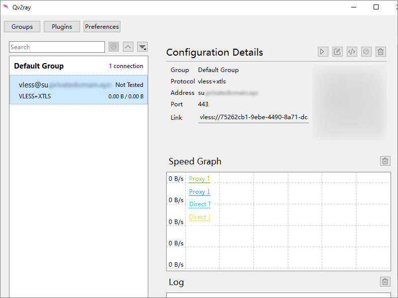

Xray with VLESS and XTLS using ProxySU and Qv2ray
VLESS offers performance improvements over the original VMESS protocol. Xray (a fork of V2Ray) offers VLESS along with XTLS. XTLS reduces double-encryption, resulting in better performance on low-power devices.
This page shows you how you can set up a Xray with VLESS and XTLS server, using the ProxySU graphical user interface (GUI) tool for Windows.
1. ProxySU
1.1. Set Up DNS Record
You will need a Linux server. We used Ubuntu 21.04 for testing the procedure on this page.
You must also own your own domain name, either free or paid.
Assuming you have a domain name and a server, create a DNS record pointing from the host name (fully qualified domain name) of the server to the server’s IP address. If necessary, allow time for the DNS record to propagate.
1.2. Download ProxySU
On your Windows PC, locate the latest release of ProxySU at https://github.com/proxysu/ProxySU/releases. At the time of writing, it is version 4.01.
Download the latest zip file. Extract the contents of the zip file.
1.3. Run ProxySU
Double-click on the ProxySU application, ProxySuper.WPF.exe. If Windows Defender Smart Screen appears, click More info then
Run anyway.
If you need to change the display language, there is a language setting drop-down box at the top of the window.
Click Add Host then Xray.
In the left column, under Host, fill in your server’s IP address and login credentials.
In the middle column, check the box for VLESS over TCP with XTLS Preferred.
In the right column, for the Address, fill in your server’s fully qualified domain name. The UUID and Port fields are generated for you.
Click Save to save your configuration.
On your server’s row, click Install.
A message appears to say that logging into the server was successful:
正在登陆服务器 ...
登陆服务器成功！
Underneath the messages, click Install. Wait while installation on your server proceeds. Status messages appear in the XrayInstallerView window. The install process takes several minutes.
At the end, ProxySU displays a message to say installation is complete and you can now enjoy it.
安装完成，尽情享用吧......
Close the XrayInstallerView window.
1.4. Save Parameters
On the row for your server, click the ViewConfig button. The server parameters and a QR code are displayed.
2. Qv2ray
2.1. Download and Install Qv2ray
Open a browser on your PC, and go to https://github.com/Qv2ray/Qv2ray. Click the
Releases link. Download the installer executable for Windows 64-bit. At the time of writing, the latest version is v2.7.0-pre2, and the executable for
Windows is Qv2ray.v2.7.0-pre2.Windows-x64.exe.
Run the Qv2ray installer executable. If Microsoft Defender SmartScreen appears, click More info and Run anyway. When asked if you want to allow this app to make changes, click Yes.
Run the installer, accepting the defaults. Wait until the installer finishes. An icon for Qv2ray appears on your Windows desktop.
2.2. Download and Install Xray
Download the latest release of Xray-core for Windows 64-bit from https://github.com/XTLS/Xray-core/releases. At the time of writing it is version 1.4.2, and the Windows version is named Xray-windows-64.zip.
Extract files from the zip file.
In Windows Explorer find your user id (e.g. C:\\Users\\you). If you don’t see your AppData folder, check the box View
> Hidden items to display hidden items.
- Select the folder
AppData. - Select
Local. - Create a new folder,
qv2ray, all lower case. - Within it, create a new folder,
vcore, all lower case. - Copy all the extracted Xray files into
C:\\Users\\you\\AppData\\qv2ray\\vcore.
2.3. Run Qv2ray
Launch Qv2ray.
Specify your Xray core as follows:
- Click Preferences.
- Click Kernel Settings.
- Select the button for V2Ray Core Executable Path.
- Navigate to the Xray executable you downloaded and copied into place, i.e.
C:\\Users\\you\\AppData\\qv2ray\\vcore\\xray.exe. - The corresponding assets directory is
C:\\Users\\you\\AppData\\qv2ray\\vcore. - Click OK.
Specify your Xray server as follows:
- Click New.
- Fill in your server host name (fully qualified domain name).
- The port is
443. - The type is
VLESS. - The UUID comes from what ProxySU set up for the server.
- Flow is
xtls-rprx-direct. - Encryption is
none. - Click the tab for TLS Settings.
- The Security Type is
XTLS. - The Server Address (SNI) is your host name (fully qualified domain name).
- Click OK.
2.4. Test Qv2ray
In Qv2ray, click Default Group to expand it. Select your server. Under Configuration Details, press the button to connect to your server.
In your browser, visit https://ipchicken.com. You should see the IP address of your server, not your local PC.
Updated 2021-06-11